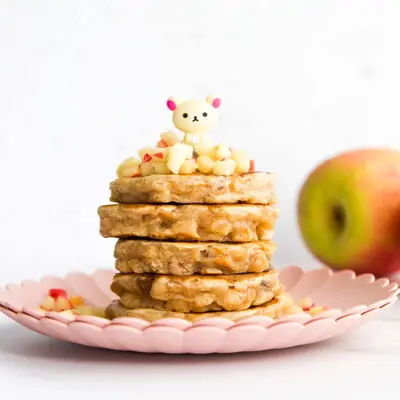

Apple Pancakes

Ingredients
- 40g (¼ cup) Raisins
- 2 Apples, finely chopped (roughly 0.5cm cubed) (I used Pink Lady)
- 1 tsp Cinnamon
- 2 tsp Coconut Oil (* can substitute with butter)
- 60g (½ cup) Plain (all purpose) Flour (* SEE NOTE 1)
- 60g (½ cup) Wholemeal (wholewheat) Flour (* SEE NOTE 1)
- 2 tsp Baking Powder
- 180ml (¾ cup) Milk
- 1 Egg
Steps
- Place the raisins in a small bowl and soak with boiling water. (SEE NOTE 2)
- Heat a nonstick skillet over a medium heat and add one teaspoon of the coconut oil (or butter). Add the chopped apple and cinnamon, reduce the heat, and saute until soft, around 3 mins. Remove from heat.
- In a large mixing bowl combine the flours and baking powder. In a separate bowl mix together the egg and milk. Add the wet ingredients to the dry and stir. Don't over mix, a few small and medium lumps are fine.
- Drain the raisins and add to the pancake batter along with the sauteed apples. Stir until just combined.
- Heat a nonstick skillet on a medium heat (SEE NOTE 3) and brush with coconut oil/butter. Add tablespoons of the mixture into the pan, I did 4 at a time.
- When bubbles rise to the surface, flip and cook the other side until golden.
- Repeat until the mixture is finished.
Recipe by Healthy Little Foodies, from Healthy Little Foodies. Saved here for personal use; the original has the full notes, tips and photos. Open original